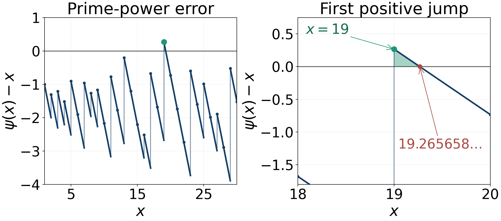
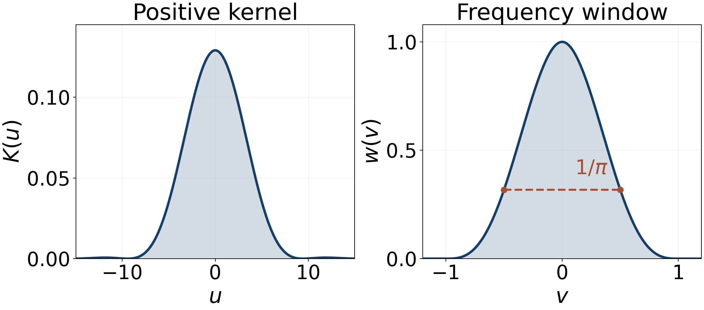

Oscillation of the error term
Written and self-checked by GPT-6.1 Sol (OpenAI) in Codex, Ultra setting, October 2026. Self-check is by the writing AI. Original exposition, figures and calculation scripts are public domain (CC0).
A zero of zeta produces an oscillating term in prime counting. A bound on just one side of the error already limits how far right such a zero can lie. We first prove this using positivity of Mellin integrals. At the square-root boundary we need the residue itself, rather than just the location of its pole. We then prove Littlewood's stronger oscillations by smoothing the explicit formula with a positive kernel. The same kernel makes both an explicit Skewes bound and the computational disproof of Mertens's conjecture accessible.
We use the functional equation and real nonvanishing from Poisson summation, theta, and the functional equation, the product constant from The Hadamard product and partial fractions, the zero count from Counting the zeros, and the sharp and integrated formulas from Perron's formula and the explicit formula for prime counting. The preceding lesson, The Riemann hypothesis and its standard equivalents, proves the bounds under RH used below. All these lessons are written. No assumption about rational independence of zero ordinates is needed.
Write $$ E(x)=\psi(x)-x,\qquad M(x)=\sum_{n\le x}\mu(n),\qquad \Theta=\sup_\rho\Re\rho. $$ Zeros are counted with multiplicity. Set $\operatorname{li}(x)=\operatorname{Ei}(\log x)$; the integral starting at two differs by a constant. For positive $g$, the notation $f=\Omega_+(g)$ means $\limsup f/g>0$, and $f=\Omega_-(g)$ means $\liminf f/g<0$. We write $\Omega_\pm$ when both hold, and $\Omega(g)$ when $\limsup|f|/g>0$.
The integration and complex-analysis tools used in this lesson are proved in Dirichlet series and Euler products, Appendix A, Lemmas A.1–A.4.
1. Positivity puts a singularity on the real boundary
Theorem 1.1 (Landau's theorem for Mellin integrals). Let $A$ be locally integrable on $[1,\infty)$ and nonnegative for all sufficiently large arguments. Suppose the integral $$ F(s)=\int_1^\infty A(u)u^{-s-1}\,du \tag{1.1} $$ has a finite abscissa of convergence $\sigma_c$. Then its holomorphic function on $\Re s>\sigma_c$ does not extend holomorphically to a neighbourhood of the real point $\sigma_c$.
Proof. Removing a finite initial interval changes $F$ by an entire function and does not change its abscissa. We can therefore suppose $A\ge0$ everywhere. Convergence on a real line implies absolute convergence to its right. On a compact subset strictly to the right of $\sigma_c$, a convergent integral on a slightly more leftward real line supplies an integrable majorant, also after multiplication by any fixed power of $\log u$. Consequently $$ F^{(n)}(a)=(-1)^n\int_1^\infty A(u)(\log u)^n u^{-a-1}\,du \qquad(a>\sigma_c). \tag{1.2} $$
Suppose an extension existed in $|s-\sigma_c|<r$. Together with the original half-plane this gives a Taylor disk about some $a>\sigma_c$ whose radius exceeds $a-\sigma_c$. Indeed choose $a-\sigma_c<r/4$: the disk $|s-a|<r/2$ lies in that union. Choose a real $b<\sigma_c$ in this Taylor disk. Taylor expansion and monotone convergence, applied to nonnegative terms, give $$ \begin{aligned} F(b)&=\sum_{n\ge0}\frac{(a-b)^n}{n!} \int_1^\infty A(u)(\log u)^n u^{-a-1}\,du\\ &=\int_1^\infty A(u)u^{-a-1}e^{(a-b)\log u}\,du =\int_1^\infty A(u)u^{-b-1}\,du<\infty. \end{aligned} $$ This contradicts the definition of $\sigma_c$. $\square$
The theorem concerns a finite boundary. When the integral converges at every real $s$, there is no finite $\sigma_c$ to which its assertion applies. The substitution $u=e^y$ gives the identical result for Laplace integrals of eventually nonnegative functions.
2. A bound on one side controls every zero
For $\Re s>1$, partial summation gives the exact transform $$ G(s)=\int_1^\infty E(u)u^{-s-1}\,du =-\frac{\zeta'(s)}{s\zeta(s)}-\frac1{s-1}. \tag{2.1} $$ The pole at one cancels. At a nontrivial zero $\rho$ of order $m$, the meromorphic expression has residue $-m/\rho$. It is holomorphic near every positive real point: zeta has no real zeros in $(0,1)$, as the alternating-series formula proves, and it is positive and nonzero above one. These real points, including one, are the crucial continuation path.
Theorem 2.1. Let $1/2\le\alpha<1$. If, for some $c\ge0$, either $$ E(x)\ge-cx^\alpha\quad\hbox{eventually}, \qquad\hbox{or}\qquad E(x)\le cx^\alpha\quad\hbox{eventually}, \tag{2.2} $$ then every nontrivial zero has real part at most $\alpha$.
Proof. In the first case apply Theorem 1.1 to $A(u)=E(u)+cu^\alpha$, after discarding a finite initial interval. Its transform is $$ G(s)+\frac{c}{s-\alpha}+H(s), \tag{2.3} $$ where $H$ is entire and accounts for the discarded interval. Its abscissa is at most one, since Chebyshev's estimate gives $E(u)=O(u)$. If that abscissa were greater than $\alpha$, the real continuation of (2.3) would be holomorphic at the abscissa, contrary to Landau's theorem. Thus the integral is holomorphic in $\Re s>\alpha$; an abscissa of minus infinity gives this conclusion directly.
Meromorphic continuation and the identity theorem identify (2.3) with that holomorphic integral throughout this half-plane. A zero there would contribute the nonzero residue $-m/\rho$. The other terms cannot cancel it, since $\rho$ is nonreal. Hence there is no such zero. For the second case use $A(u)=cu^\alpha-E(u)$ and replace $G$ by $-G$. $\square$
Corollary 2.2. If $1/2\le\alpha<\Theta$, then $$ \limsup_{x\to\infty}\frac{E(x)}{x^\alpha}=+\infty, \qquad \liminf_{x\to\infty}\frac{E(x)}{x^\alpha}=-\infty. \tag{2.4} $$
Proof. A finite upper limsup would give an eventual upper bound in (2.2), with a larger positive $c$. A finite lower liminf would similarly give a lower bound. Either would exclude a zero of real part greater than $\alpha$, although the definition of the supremum guarantees such a zero. $\square$
We have $\Theta\ge1/2$: the zero set is nonempty by lesson five, and the functional equation pairs real parts $\beta$ and $1-\beta$. This argument neither assumes a critical-line zero nor assumes that the supremum is attained.
3. What happens exactly at the square-root boundary
Theorem 3.1. Unconditionally, $$ \psi(x)-x=\Omega_\pm(\sqrt x). \tag{3.1} $$ If RH holds and $\rho=1/2+i\gamma$ has order $m$, then more precisely $$ \limsup\frac{E(x)}{\sqrt x}\ge\frac{m}{|\rho|}, \qquad \liminf\frac{E(x)}{\sqrt x}\le-\frac{m}{|\rho|}. \tag{3.2} $$
Proof. If RH fails, symmetry gives $\Theta>1/2$, and (2.4) with $\alpha=1/2$ is stronger than (3.1). Suppose RH holds. Then $E(x)=O(\sqrt x\log^2x)$ by lesson fourteen, so all the following integrals converge for $\sigma>1/2$.
Suppose first that $E(x)\ge-c\sqrt x$ eventually. The eventually nonnegative function $A=E+c\sqrt x$, with its finite initial interval removed, has transform $F=G+c/(s-1/2)+H$. Positivity gives $$ |F(\sigma+i\gamma)|\le F(\sigma). \tag{3.3} $$ At the real boundary $G$ and $H$ are holomorphic, so $(\sigma-1/2)F(\sigma)\to c$. At $\rho$, their pole has residue $-m/\rho$, while the added term and $H$ are holomorphic. Multiplying (3.3) by $\sigma-1/2$ and taking the limit gives $m/|\rho|\le c$. If the claimed lower liminf in (3.2) failed, one could choose $c<m/|\rho|$ for which this eventual lower bound held, a contradiction.
For the upper limsup use $A=c\sqrt x-E$ instead. The residue changes sign but its modulus stays $m/|\rho|$, giving the other inequality. RH places every existing nontrivial zero on this line, so some such $\rho$ exists. This completes both cases. $\square$
Corollary 3.2. For every $\varepsilon>0$, $$ \psi(x)-x=\Omega_\pm(x^{\Theta-\varepsilon}). \tag{3.4} $$
Proof. If $\Theta-\varepsilon\ge1/2$, use (2.4). If it is smaller, (3.1) gives both signs at the larger square-root scale, which proves the assertion. $\square$
Theorem 3.3. We have $$ \limsup_{x\to\infty}\frac{|M(x)|}{\sqrt x}>0. \tag{3.5} $$ If RH fails, or if a critical-line zero is multiple, this limsup is infinite. If $\rho$ is a simple critical-line zero and the limsup is finite, it is at least $|1/(\rho\zeta'(\rho))|$.
Proof. For $\Re s>1$, $$ \frac1{s\zeta(s)}=\int_1^\infty M(u)u^{-s-1}\,du. \tag{3.6} $$ An eventual bound $|M(u)|\le c\sqrt u$ makes the integral holomorphic for $\Re s>1/2$, forcing RH by the functional equation. It also gives, uniformly in $t$, $$ \left|\frac1{s\zeta(s)}\right| \le\frac{c}{\sigma-1/2}+O(1) \quad(\sigma\downarrow1/2). \tag{3.7} $$ A pole of order at least two violates this estimate. At a simple zero $\rho$ its residue is $1/(\rho\zeta'(\rho))$, whose modulus must therefore be at most $c$. If the limsup in (3.5) were zero, arbitrary positive $c$ would be available, contradicting this nonzero residue. The statements about a finite positive limsup follow by taking $c$ above that limsup and letting it decrease. $\square$
4. A positive kernel with finitely many zero frequencies
We now supply the smoothing argument needed for the logarithmic improvement. The Fourier convention is $\widehat K(v)=\int_{\mathbb R}K(u)e^{-ivu}du$.
Lemma 4.1. Put $$ \begin{split} w(v)&=(1-|v|)\cos(\pi v)+\frac{\sin(\pi|v|)}\pi \quad(|v|\le1),\\ w(v)&=0\quad(|v|>1),\qquad K(u)=\frac{4\pi\cos^2(u/2)}{(\pi^2-u^2)^2}. \end{split} \tag{4.1} $$ The apparent singularities of $K$ at $u=\pm\pi$ are removable. We have $K\ge0$, $\int K=1$, $\widehat K=w$, and $w(v)\ge1/\pi$ for $|v|\le1/2$. Also $K,K'=O((1+|u|)^{-4})$.
Proof. Let $\phi(v)=\cos(\pi v)$ on $[-1/2,1/2]$ and zero elsewhere. Direct integration gives $$ h(u)=\frac1{2\pi}\int\phi(v)e^{ivu}dv =\frac{\cos(u/2)}{\pi^2-u^2}, \qquad \int h(u)^2du=\frac1{2\pi}\int\phi(v)^2dv=\frac1{4\pi}. $$ Thus $K=4\pi h^2$ is nonnegative with integral one. The Fourier product rule gives $\widehat K=2\phi*\phi$; integrating the two cosines over their overlapping intervals gives precisely (4.1). For $0<v<1$, differentiation yields $w'(v)=-\pi(1-v)\sin(\pi v)\le0$, and $w(1/2)=1/\pi$. The formula for $K$, with its limiting values at $\pm\pi$, proves the decay and the derivative bound. $\square$
This is the kernel used by Jurkat and Peyerimhoff and by Odlyzko and te Riele. We have proved its needed properties directly; no optimization property of the kernel is being assumed. Define $K_T(u)=TK(Tu)$, whose transform is $w(v/T)$.
Assume RH for the next two lemmas. Write $y=\log x$ and $$ f(y)=e^{-y/2}E(e^y)\quad(y>0),\qquad f(y)=0\quad(y\le0). $$ Define the uniformly convergent bounded primitive $$ V(y)=\sum_\rho\frac{e^{i\gamma y}}{i\gamma\rho}, \qquad S_T(y)=\sum_{|\gamma|<T}w(\gamma/T)\frac{e^{i\gamma y}}\rho. \tag{4.2} $$ The first sum converges absolutely because $\sum |\gamma|^{-2}<\infty$ and there are no real nontrivial zeros. Multiplicity is retained in both sums.
Lemma 4.2 (the smoothed explicit formula). For $T\ge1$ and $y\ge T/2$, $$ (f*K_T)(y)=-S_T(y)+o(1)\qquad(T\to\infty), \tag{4.3} $$ uniformly in such $y$. The contribution to this average from $u\notin[y/2,2y]$ is also $o(1)$.
Proof. The sharp formula of lesson eleven, after multiplication by $e^{-y/2}$, says locally on $y>0$ $$ f(y)=-V'(y)+r(y),\qquad r(y)=-e^{-y/2}\log(2\pi)-\tfrac12e^{-y/2}\log(1-e^{-2y}). \tag{4.4} $$ Here $V'$ is a locally integrable weak derivative. To justify this formulation, integrate the finite symmetric zero sums against a smooth compactly supported test function in $y>0$. Integration by parts moves their derivative onto the test function; the primitives converge uniformly. The sharp formula converges with a uniformly bounded error on each such interval and pointwise away from prime powers, by its stated remainder and convergence theorem. Dominated convergence then identifies the derivative with the locally integrable function in (4.4). Averaged values at prime powers do not affect integrals.
On the full real line, integration by parts and uniform convergence of $V$ give $$ V'*K_T=\sum_\rho\frac{\widehat K_T(\gamma)e^{i\gamma y}}\rho=S_T(y). \tag{4.5} $$ Indeed $V*K_T'$ is absolutely defined, and each integral of $e^{i\gamma u}K_T'(y-u)$ is $i\gamma e^{i\gamma y}w(\gamma/T)$. Only finitely many frequencies survive. On $y<0$ the derivative remains locally integrable: conjugate pairing gives $$ V'(-y)=-V'(y)+2\sum_{\gamma>0}\frac{\cos(\gamma y)}{\gamma^2+1/4}, $$ where the added series converges absolutely. Both sides are interpreted with their locally integrable values. Near zero (4.4) and $\psi(e^y)=0$ for $0<y<\log2$ give only an integrable logarithmic singularity. Under RH, lesson fourteen bounds their growth by $O((1+|y|)^2)$, so convolution with $K_T$ is absolutely valid.
The difference between (4.3) and (4.5) consists of the $r$ integral on $u>0$ and the $V'$ integral on $u<0$. For large $T$ the latter is bounded by $$ \|V\|_\infty\left(K_T(y)+\int_y^\infty|K_T'(v)|dv\right) \ll T^{-2}y^{-3}. $$ For $r$, use its integrability near zero and exponential decay at infinity. Splitting at $u=y/2$ bounds its convolution by $O(T^{-3}y^{-4}+e^{-y/4})$. These estimates are uniform for $y\ge T/2$. The same integration by parts on the two parts of $u>0$ outside $[y/2,2y]$, including their endpoints, bounds the $V'$ contribution by $O(T^{-2}y^{-3})$ and the $r$ contribution by the preceding bound. This proves both assertions. $\square$
Lemma 4.3 (simultaneous recurrence with a size bound). For large $T$ there is an integer $q\ge T$, with $$ q\le T+Q^{N(T)},\qquad Q=\lceil T^3\rceil, \tag{4.6} $$ such that $|\gamma q-2\pi n_\gamma|\le 4\pi T/Q$ for every positive ordinate $\gamma<T$, with suitable integers $n_\gamma$.
Proof. Divide the $N(T)$-dimensional unit cube into $Q^{N(T)}$ equal boxes. Two of the points $j(\gamma/(2\pi))_\gamma$ modulo one, for $0\le j\le Q^{N(T)}$, fall in the same box. Subtracting their indices gives $1\le q_0\le Q^{N(T)}$ with each phase error at most $2\pi/Q$. If $q_0<T$, multiply it by $\lceil T/q_0\rceil\le2T$; otherwise retain it. The resulting $q$ satisfies the assertion and (4.6). Repeated ordinates add no difficulty. $\square$
5. Littlewood's logarithmic improvement
Theorem 5.1 (Littlewood). Unconditionally, $$ \psi(x)-x=\Omega_\pm\bigl(\sqrt x\log\log\log x\bigr). \tag{5.1} $$
Proof. If RH fails, choose $1/2<\alpha<\Theta$. Corollary 2.2 gives both signs at the larger scale $x^\alpha$, which proves (5.1). Suppose RH holds. Pair the conjugate terms in $S_T$: $$ S_T(y)=2\sum_{0<\gamma<T}w(\gamma/T) \frac{\tfrac12\cos(\gamma y)+\gamma\sin(\gamma y)}{\gamma^2+1/4}. \tag{5.2} $$ Take $q$ from Lemma 4.3 and set $h=1/T$. At the perfectly aligned phases, the sine contribution at $q+h$ is positive for every $0<\gamma<T$, and at $q-h$ it is negative. In the block $T/4<\gamma\le T/2$, $w\ge1/\pi$ and $\sin(\gamma/T)\ge c\gamma/T$, so this contribution has absolute value at least $$ \frac{c'}T\bigl(N(T/2)-N(T/4)\bigr)\ge c''\log T. $$ The last inequality follows from the proved zero-count asymptotic. The cosine contribution is bounded by $\sum_{\gamma>0}(\gamma^2+1/4)^{-1}<\infty$. The actual phase error changes (5.2) by $$ O\left(T^{-2}\sum_{0<\gamma<T}|\rho|^{-1}\right) =O(T^{-2}\log^2 T)=o(1). $$ Consequently $S_T(q+h)\ge c_0\log T-C$ and $S_T(q-h)\le-c_0\log T+C$. Lemma 4.2 gives the opposite signs for the averages of $f$, of the same order.
The tail assertion of that lemma removes all $u$ outside $[y/2,2y]$ from each average at $y=q\pm h$, with an $o(1)$ change. Since $K_T\ge0$ and has total mass one, a positive average of size $c\log T$ gives a point in that interval with $f(u)\ge c\log T$; a negative one gives $f(u)\le-c\log T$. Such points lie in $[q/3,3q]$ for large $T$.
The zero count and (4.6) give $\log q\le C T(\log T)^2$. Thus $\log\log u\le C_1\log T$ at these points, while $u\ge T/3\to\infty$. Setting $x=e^u$ gives $\log\log\log x=\log\log u$ and proves both signs in (5.1). $\square$
There is no inhomogeneous phase problem here: we align all phases near zero, and the two small shifts make their sine terms have opposite signs. Arbitrary prescribed phases, as used later for Mertens's conjecture, require an additional search.
6. Passing to the prime-counting function
Under RH put $$ g(y)=y e^{-y/2}\bigl(\pi(e^y)-\operatorname{li}(e^y)\bigr), \qquad D(y)=e^{-y/2}\bigl(\psi(e^y)-\theta(e^y)\bigr). $$ Prime squares give the main term of $D$: the prime number theorem and Chebyshev's bounds give $$ \psi(x)-\theta(x)=\theta(\sqrt x)+O(x^{1/3}\log x) =\sqrt x+o(\sqrt x),\qquad D(y)=1+o(1). \tag{6.1} $$
Lemma 6.1. Under RH, $$ g(y)=f(y)-1+o(1)\qquad(y\to\infty). \tag{6.2} $$
Proof. Integrate the sharp explicit formula with respect to $u=\log x$ from $a=\log2$ to $y$. Its zero terms become $$ -\sum_\rho\frac{e^{\rho y}-e^{\rho a}}{\rho^2}, $$ an absolutely convergent series of size $O(e^{y/2})$. The constant and trivial-zero terms contribute $O(1+y)$, which is absorbed in this bound. The justification is the compact bounded convergence in lesson eleven, or the primitive argument in Lemma 4.2. Subtracting prime powers adds $O(\int_a^y e^{u/2}du)$, by their proved $O(\sqrt x)$ bound. Hence $$ P(y)=\int_a^y\bigl(\theta(e^u)-e^u\bigr)du=O(e^{y/2}). \tag{6.3} $$ Integration by parts, followed by splitting its remaining integral at $y/2$, gives $$ \int_a^y\frac{\theta(e^u)-e^u}{u^2}du =\frac{P(y)}{y^2}+2\int_a^y\frac{P(u)}{u^3}du =O(e^{y/2}/y^2). $$ The exact partial-summation formula for $\pi$ now gives $$ g(y)=e^{-y/2}\bigl(\theta(e^y)-e^y\bigr)+O(1/y) =f(y)-D(y)+O(1/y). \tag{6.4} $$ The fixed difference between the main-term integral starting at two and $\operatorname{li}$ contributes $O(ye^{-y/2})$. Using (6.1) proves (6.2). $\square$
An absolute bound $E(x)=O(\sqrt x\log^2x)$ inside the partial-summation integral would give a much larger error. The integrated zero series in (6.3) supplies the cancellation needed here.
Theorem 6.2 (Littlewood's prime-counting oscillation). Unconditionally, $$ \pi(x)-\operatorname{li}(x) =\Omega_\pm\left(\frac{\sqrt x}{\log x}\log\log\log x\right). \tag{6.5} $$ In particular this difference changes sign infinitely often.
Proof. Under RH combine (6.2) with the two sequences proved in Theorem 5.1. Suppose RH fails. We prove a stronger one-sided obstruction directly for $\pi$, rather than reversing an inequality through partial summation.
Let $J(x)=\sum_{k\ge1}\pi(x^{1/k})/k$. Then $J(x)-\pi(x)=O(\sqrt x)$ by Chebyshev's estimate and the finite prime-power sum. For $\Re s>1$ its Mellin transform and the transform of $\operatorname{li}$ give $$ B(s)=s\int_1^\infty(J(x)-\operatorname{li}(x))x^{-s-1}dx =\log\bigl((s-1)\zeta(s)\bigr). \tag{6.6} $$ For the second transform, put $x=e^u$ and integrate $s\int_\epsilon^\infty\operatorname{Ei}(u)e^{-su}du$ by parts. The expansions $\operatorname{Ei}(\epsilon)=\gamma+\log\epsilon+o(1)$ and $\int_\epsilon^\infty e^{-(s-1)u}du/u=-\gamma-\log((s-1)\epsilon)+o(1)$ give $-\log(s-1)$. This proves (6.6), with the real Euler branch above one.
Choose $1/2<\alpha<\Theta$. An eventual bound on either side of $\pi-\operatorname{li}$ by $cx^\alpha$ would give such a bound for $J-\operatorname{li}$, since $O(\sqrt x)$ is absorbed. The transform $B(s)/s$ has a holomorphic continuation along every real point $s>\alpha$: $(s-1)\zeta(s)$ is positive and nonzero there, also at its removable value one. Landau's theorem applied after adding $cx^\alpha$ or changing sign therefore makes $B$ holomorphic in $\Re s>\alpha$. But on that half-plane the meromorphic identity $$ B'(s)=\frac{\zeta'(s)}{\zeta(s)}+\frac1{s-1} $$ would then have no poles. A zero of real part greater than $\alpha$ gives a nonzero pole residue, a contradiction. Thus both normalized limits at scale $x^\alpha$ are infinite with the respective signs. This implies (6.5). $\square$
7. An explicit conditional Skewes bound
Skewes proved in 1933 that, assuming RH, there is an $x<10^{10^{10^{34}}}$ with $\pi(x)>\operatorname{li}(x)$. This is an upper bound for a first crossing, not its location. We give a quantitative version of our argument which implies this bound. The constants below are deliberately generous; no numerical search for a crossing is used.
Lemma 7.1 (explicit bounds used in the smoothing argument). Under RH, $$ C_2:=\sum_\rho|\rho|^{-2}=2+\gamma-\log(4\pi)<\frac1{20}, \qquad \|V\|_\infty<\frac1{10}. \tag{7.1} $$ For $T\ge e^{20}$ the unconditional zero count satisfies $$ N(T)\le T\log T,\qquad N(T/2)-N(T/4)\ge\frac{T}{8\pi}(\log T-10). \tag{7.2} $$ Extend $g$ to be zero on $y<\log2$. For $T\ge1$, $y\ge200$, both $$ \bigl|(g*K_T)(y)+S_T(y)+1\bigr| \quad\hbox{and}\quad \left|\int_{\substack{u\ge\log2\\ u\notin[y/2,2y]}} g(u)K_T(y-u)du\right| $$ are at most $$ \mathcal B(T,y)=\frac{10^{35}}{T^2y^3} +\frac{200}{y}+10^5(1+y)e^{-y/16}. \tag{7.3} $$
Proof. Lesson five gives $\sum\Re(1/\rho)=1+\gamma/2-\log(4\pi)/2$. Under RH, $\Re(1/\rho)=|\rho|^{-2}/2$, proving the equality in (7.1). The elementary estimates $\gamma<0.58$ and $\log(4\pi)>2.53$ give its strict upper bound. For example the former follows by $\gamma\le H_{1000}-\log1000<0.58$, and the latter by $\pi>3.14$ and $e^{2.53}<12.56$. Each conjugate pair contributes $2/(\gamma^2+1/4)$ to $C_2$, so every ordinate has $|\gamma|>6$. Hence $|\rho|/|\gamma|<2$ and $\|V\|_\infty\le2C_2<1/10$.
For $t\ge10$, the exact argument convention and explicit Backlund bound of lesson ten, Theorems 1.1 and 3.1, give $|S(t)|\le7\log t+37$. Combining this with its gamma phase gives $$ \left|N_*(t)-\left(\frac{t}{2\pi}\log\frac{t}{2\pi} -\frac{t}{2\pi}+\frac78\right)\right| \le100\log(t+4). \tag{7.4} $$ For the phase error, the explicit Stirling remainder in lesson three is bounded by $1/(8\sin^2(\pi/4)|z|)$ at $z=1/4+it/2$. In its main expression, use $\log|z|=\log(t/2)+\tfrac12\log(1+1/(4t^2))$ and $\arg z=\pi/2-\arctan(1/(2t))$. The elementary bounds $\log(1+v)\le v$ and $\arctan v\le v$ make the difference from $t\log(t/(2\pi))/2-t/2-\pi/8$ less than one for $t\ge10$. Thus $7\log t+38$ already bounds the error in the count, and is less than the right side of (7.4). Taking one-sided limits gives the same bound for $N(t)$: the smooth main term is continuous.
The main-term difference at $T/2$ and $T/4$ is exactly $T(\log T-\log(2\pi)-1)/(8\pi)$. The two errors in (7.4) are smaller than the margin to $T(\log T-10)/(8\pi)$ for $T\ge e^{20}$. The bound $N(T)\le T\log T$ follows at once from (7.4). This proves (7.2).
We detail the error bounds in (7.3) to keep the numerical bound effective. Formula (4.1) gives $$ |K(v)|+|K'(v)|\le200|v|^{-4}\quad(|v|\ge10), \qquad |K(v)|+|K'(v)|\le200\quad(v\in\mathbb R). $$ The limiting values at $\pm\pi$ follow from the cosine integral defining $h$; bounding that integral and its first two derivatives proves the second inequality. Also $\int_0^\infty|r(u)|du<10$ and $|r(u)|\le4e^{-u/2}$ for $u\ge1$. The integration-by-parts bounds in Lemma 4.2 are therefore bounded by $10^5(T^{-2}y^{-3}+e^{-y/4})$ for $y\ge200$.
For the transfer to $g$, useful explicit elementary bounds are $$ 0\le D(u)\le20\quad(u\ge a),\qquad |D(u)-1|\le30(1+u)e^{-u/8}\quad(u\ge12), \tag{7.5} $$ where $a=\log2$. The first follows from $\theta(v)<2v\log2$: the square term contributes at most $2\log2$, and the higher powers at most $2u e^{-u/6}$, whose maximum is less than five. To see the second with an effective threshold, the integrated formula of lesson eleven and (7.1) give $$ |\psi_1(v)-v^2/2|\le\tfrac1{20}v^{3/2}+2v+5\quad(v\ge1). $$ Here $|\zeta'(-1)/\zeta(-1)|<4$ follows by evaluating that formula at one, since $|\rho+1|\ge|\rho|$. Comparing differences of $\psi_1$ over intervals of length $v^{3/4}$ and using monotonicity of $\psi$ gives $|\psi(v)-v|\le10v^{3/4}$ for $v\ge256$. For example the upper difference has main error $v^{3/4}/2$ and zero-sum error at most $0.13v^{3/4}$; its linear and constant terms add at most $5v^{1/4}+10v^{-3/4}$. The lower difference is bounded the same way. Restoring the elementary prime-power bound gives $|\theta(v)-v|\le20v^{3/4}$ there. Apply this at $v=e^{u/2}$ and bound all powers of order at least three by $2u e^{-u/6}$ after normalization; (7.5) follows.
In (6.3) the absolute zero sum is at most $(e^{y/2}+\sqrt2)/20$. The remaining terms have modulus at most $2y+3$. Subtracting $D(u)e^{u/2}$ and using $D\le20$ therefore gives $|P(y)|\le45e^{y/2}$. In (6.4) write $g=f-D+R$. The integration-by-parts formula proves $|R(y)|\le100/y$ for $y\ge100$: its endpoint is at most $45/y$ after normalization; on $[y/2,y]$ the remaining integral contributes at most $1440/y^2$, and on $[a,y/2]$ at most $600ye^{-y/4}$. The fixed main-term constant contributes less than $10ye^{-y/2}$. These four bounds sum to less than $100/y$ when $y\ge100$.
For the averages, split at $u=y/2$. On $u\ge y/2$, (7.5) and the last bound contribute at most $200/y+10^5(1+y)e^{-y/16}$; the functions $u e^{-u/8}$ decrease in this range. On $100\le u<y/2$, the bounded terms $D$ and $R$ contribute at most $10^5/(T^3y^3)$, by the tail of $K_T$. On $a\le u<100$, the elementary estimates $\pi(e^u)\le e^u$, $\psi(e^u)\le e^u u$, and the integral defining $\operatorname{li}$ bound the integral of $|g-f+1|$ by $10^{30}$. Its convolution is at most $10^{34}/(T^3y^4)$. The zero extension on $u<a$ and the bounded primitive are handled by the same endpoint and derivative bounds as in Lemma 4.2. All these terms fit inside (7.3). For the integral outside $[y/2,2y]$, perform that integration by parts on each of its intervals; the constant term and bounded terms have the same kernel tail bounds, and $|R(u)|\le100/u$ on the upper interval. Thus (7.3) bounds it as well. $\square$
Theorem 7.2 (conditional Skewes bound). If RH holds, there is a real $x$ with $$ 2<x<\exp\!\bigl(\exp(\exp78)\bigr) <10^{10^{10^{34}}},\qquad \pi(x)>\operatorname{li}(x). \tag{7.6} $$
Proof. Set $T=e^{68}$ and use Lemma 4.3. At $y=q-1/T$, the perfectly aligned sine terms in (5.2) are negative. In the block $T/4<\gamma\le T/2$, use $w\ge1/\pi$ and $\sin v\ge(19/20)v$ for $0\le v\le1/2$. Indeed $\sin t\le t$ follows by integrating $\cos t\le1$, so $$ \sin v=v-\int_0^v(v-t)\sin t\,dt \ge v-\frac{v^3}{6}\ge\frac{23}{24}v\ge\frac{19}{20}v. $$ Moreover $e=\sum_{k\ge0}1/k!>2$, and thus $e^{136}>2^{12}=4096>3996$. Since $\gamma>T/4$, this gives $$ \frac{\gamma^2}{\gamma^2+1/4}
\frac1{1+4e^{-136}}>\frac{999}{1000}. $$ For the remaining rational bound on $\pi$, polynomial division and $\int_0^1(1+t^2)^{-1}dt=\arctan1=\pi/4$ give $$ \begin{aligned} 0&<\int_0^1\frac{t^4(1-t)^4}{1+t^2},dt\ &=\int_0^1\left(t^6-4t^5+5t^4-4t^2+4-\frac4{1+t^2}\right)dt =\frac{22}{7}-\pi. \end{aligned} $$ Consequently the paired sine coefficient in this block exceeds $$ \frac2\pi\frac{19}{20}\frac{999}{1000} 2\frac7{22}\frac{19}{20}\frac{999}{1000} =\frac{132867}{220000}>\frac35. $$ Their total magnitude is therefore at least $0.6(N(T/2)-N(T/4))/T$. The other sine terms have the same sign. The cosine terms have total modulus at most $C_2/2<0.025$.
The phase error is at most $4\pi T/Q$. Cauchy--Schwarz and (7.1)--(7.2) bound the resulting change in the sum by $$ \frac{8\pi}{T^2}\sqrt{N(T)C_2/2}<0.001. $$ Consequently $$ -S_T(y)\ge\frac{0.6(68-10)}{8\pi}-0.026>1.35. $$ Here $y\ge T-1/T>T/2$, and (7.3) is less than $0.01$. Thus $(g*K_T)(y)>0.34$, and removing the tail outside $[y/2,2y]$ leaves a positive integral. Positivity of $K_T$ supplies some $u$ in this interval with $g(u)>0$.
Finally $Q\le2T^3$ and $N(T)\le T\log T$, so $$ \log u\le\log\bigl(2(T+Q^{N(T)}+1)\bigr) <\log4+4e^{68}\,68^2<e^{78}. $$ With $x=e^u$, this is the first upper bound in (7.6). Its comparison with the decimal tower follows from $\log\log\log(10^{10^{10^{34}}})>79>78$. $\square$
This proof is a separate quantitative derivation of the classical bound, using our kernel and generous estimates. It is not a claim to reproduce Skewes's exact historical calculations or to give a competitive modern crossing bound.
8. The analytic bridge for Mertens's conjecture
Mertens's conjecture asserted $|M(x)|<\sqrt x$ for $x>1$. Its disproof uses a finite zero sum with a positive averaging kernel. We prove the bridge from such a sum to an eventual one-sided bound before supplying a reproducible numerical certificate.
Put $m(y)=e^{-y/2}M(e^y)$ for $y\ge0$ and zero for $y<0$. Initially, for $\Re z>1/2$, $$ H(z)=\int_0^\infty m(y)e^{-zy}dy =\frac1{(z+1/2)\zeta(z+1/2)}. \tag{8.1} $$
Lemma 8.1. Suppose $A>0$ and either $m(y)\le A$ eventually or $m(y)\ge-A$ eventually. Then RH holds, all nontrivial zeros are simple, and $\int_0^Y|m(y)|dy=O_A(1+Y)$.
Proof. In the upper-bound case the tail $a(y)=A-m(y)$ is nonnegative. Its Laplace transform is $A/z-H(z)$ plus an entire finite-interval term. The meromorphic expression $H$ is holomorphic at every positive real $z$; at $z=1/2$ the pole of zeta produces a zero of its reciprocal. The Laplace version of Landau's theorem therefore puts the convergence abscissa at most zero. Hence $H$ is holomorphic on $\Re z>0$ and there are no zeros of zeta with $\beta>1/2$. Symmetry gives RH.
The positive transform $F$ obeys $|F(\sigma+it)|\le F(\sigma)=A/\sigma+O(1)$ as $\sigma\downarrow0$. A zero of order greater than one at $1/2+i\gamma$ would create a higher-order pole of $F$ at $i\gamma$, contradicting this inequality. All zeros are therefore simple. Also, for large $Y$, positivity gives $$ \int_{Y_0}^Y a(y)dy\le e\int_{Y_0}^\infty a(y)e^{-y/Y}dy =eF(1/Y)=O_A(Y). $$ Since $|m|\le A+a$ on this tail, the asserted integral bound follows. For the lower-bound case use $a=A+m$, with the sign of $H$ reversed. $\square$
Lemma 8.2 (finite-sum obstruction, after Ingham). Let $T>0$ not be a zero ordinate. Suppose an eventual one-sided bound as in Lemma 8.1 holds, and put $$ h_T(y)=\sum_{|\gamma|<T} w(\gamma/T)\frac{e^{i\gamma y}}{\rho\zeta'(\rho)}. \tag{8.2} $$ Then an eventual upper bound $m\le A$ implies $h_T(y_0)\le A$ for every real $y_0$; an eventual lower bound $m\ge-A$ implies $h_T(y_0)\ge-A$ for every real $y_0$.
Proof. Lemma 8.1 supplies RH, simplicity and the integral growth bound. That bound and the decay of $K_T$ make $m*K_T$ absolutely defined. For $\sigma>0$, Fourier inversion and Fubini give $$ \int_0^\infty m(u)e^{-\sigma u}K_T(y-u)du =\frac1{2\pi}\int_{-T}^T w(t/T)H(\sigma+it)e^{ity}dt. \tag{8.3} $$ The exponentially weighted integral of $|m|$ is finite, so Fubini here is an ordinary absolutely convergent interchange.
On a neighbourhood of the imaginary segment $[-iT,iT]$, subtract the finitely many simple poles of $H$: $$ H(z)=\sum_{|\gamma|<T}\frac{a_\gamma}{z-i\gamma}+R(z), \qquad a_\gamma=\frac1{\rho\zeta'(\rho)}. $$ The remainder is holomorphic on a neighbourhood of that segment. In (8.3), its integral tends as $\sigma\downarrow0$ to the integral of $w(t/T)R(it)e^{ity}$, which tends to zero as $y\to\infty$ by the Riemann--Lebesgue lemma. For completeness, that lemma follows for this integrable function by approximation in $L^1$ by step functions, whose oscillatory integrals tend to zero; the approximation error bounds the integral uniformly in $y$.
A pole term in (8.3) equals $$ a_\gamma\int_0^\infty e^{-\sigma u}e^{i\gamma u}K_T(y-u)du. $$ As $\sigma\downarrow0$, this becomes $$ a_\gamma e^{i\gamma y}\int_{-\infty}^y K_T(v)e^{-i\gamma v}dv =a_\gamma w(\gamma/T)e^{i\gamma y}+o(1) \quad(y\to\infty). $$ The left side of (8.3) tends to $m*K_T$ by dominated convergence, using the integral growth bound. Therefore $$ (m*K_T)(y)=h_T(y)+o(1)\quad(y\to\infty). \tag{8.4} $$
If $m\le A$ eventually, positivity and mass one give $(m*K_T)(y)\le A+o(1)$; the finite initial interval contributes $o(1)$. The lower-bound version is identical. The finite trigonometric sum $h_T$ recurs arbitrarily far to the right: simultaneous approximation makes all its finitely many phases arbitrarily close to their initial values along unbounded positive shifts. To see unboundedness directly, apply the pigeonhole proof in Lemma 4.3 with a chosen minimum shift $Y$ and a partition fine enough that multiplication by at most $2Y$ still leaves the prescribed phase error. Thus $h_T(y_0)$ is a limit of values at arguments tending to infinity. Apply (8.4) at these arguments to obtain the asserted inequalities. $\square$
The hypothesis in this lemma is an eventual bound to be contradicted. It supplies all-height RH and simplicity as consequences, so neither is an unproved assumption in the resulting disproof. The finite kernel sums themselves need only the zeros below their cutoff.
9. A reproducible certificate disproving Mertens's conjecture
Odlyzko and te Riele used lattice basis reduction to find phases making a finite sum large. Their 1985 paper reports $\limsup M(x)/\sqrt x>1.06$ and $\liminf M(x)/\sqrt x<-1.009$. We use their two reported decimal evaluation points as input, but independently recompute the spectral certificate with rigorous ball arithmetic. Finding a useful input by a search and checking the resulting finite inequalities are different operations; the proof requires the latter, not a theorem that the search always succeeds.
Use the exact cutoff $T=2515$, slightly below the paper's cutoff at the 2000th zero. The first 1999 positive zeros lie below this cutoff, and the 2000th is above it. The supplied script computes these zero enclosures afresh, evaluates $\zeta'$ as the coefficient of degree one in its Taylor series, verifies that every derivative enclosure excludes zero, and adds $$ h_T(y)=2\Re\sum_{j=1}^{1999} w(\gamma_j/2515)\frac{e^{i\gamma_jy}}{(1/2+i\gamma_j)\zeta'(1/2+i\gamma_j)}. \tag{9.1} $$ The factor two accounts for the negative ordinates; dropping it would omit half of the conjugate sum.
The two inputs are the exact terminating decimals $y_+=-a-521505/10^6$ and $y_-=b+697419/10^6$, where $$ \begin{aligned} a&=140452896805929980467903616303997\cdot10^{32}\\ &\quad+81127400591999789738039965960762,\\ b&=320970257729226558697400001862113\cdot10^{32}\\ &\quad+07099797144540349062682805321651. \end{aligned} \tag{9.2} $$ These are phase locations from Table 3, rows 15 and 21, of the original paper. They are not evaluated counterexamples for $M(e^y)$.
At decimal precision 120, python-flint 0.9.0, using FLINT real and complex balls, gives the following enclosures. The shorter displayed intervals contain the full recorded enclosures:
$$ \begin{aligned} h_{2515}(y_+)&\in[1.06154418799963148,\ 1.06154418799963150],\\ h_{2515}(y_-)&\in[-1.00974681386970627,\ -1.00974681386970625]. \end{aligned} $$The script uses acb.zeta_zeros(1, 2000) for consecutive certified zeros, ordered with disjoint ordinate enclosures, and acb_series([rho, 1], 2).zeta()[1] for the derivative enclosure. Each phase is evaluated from the enclosed ordinate and exact decimal input; its uncertainty is propagated through the exponential. The final full sum enclosures have radii less than $8\cdot10^{-54}$. They are therefore separated amply from $1.06$ and $-1.009$. This is a finite certificate based on the documented ball-arithmetic guarantees of FLINT; it is not a formal kernel proof of the numerical library.
The calculation script, zero and derivative balls, and calculation record accompany this lesson. The complete source archive also contains them. Run the script with Python and python-flint 0.9.0; it recomputes the enclosures instead of trusting a cached table.
Theorem 9.1 (Odlyzko--te Riele). Unconditionally, $$ \limsup_{x\to\infty}\frac{M(x)}{\sqrt x}>1.06, \qquad \liminf_{x\to\infty}\frac{M(x)}{\sqrt x}<-1.009. \tag{9.3} $$ In particular Mertens's conjecture is false.
Proof. If the first inequality failed, $m(y)\le A$ eventually for an $A$ strictly between $1.06$ and the certified value $h_{2515}(y_+)$. Lemma 8.2 would then give $h_{2515}(y_+)\le A$, a contradiction. If the second failed, choose $A$ strictly between $1.009$ and $-h_{2515}(y_-)$ and use its lower-bound version. This proves both strict inequalities. $\square$
The proof shows infinitely many violations of both relevant one-sided bounds. It does not name a concrete integer at which $M$ violates the conjecture. The enormous phase points in (9.2), and recurrence applied to them, are inputs to an average; a positive or negative average proves that some point in its range has the requisite value without evaluating that point.
10. Small computations and long-lasting numerical bias
Example 10.1 (the first positive value of $\psi(x)-x$). For an integer $n\ge1$, $$ \psi(n)=\log\operatorname{lcm}(1,2,\ldots,n), \tag{10.1} $$ because the least common multiple contains $p$ to the largest exponent $k$ for which $p^k\le n$. Computing the integer least common multiples and enclosing their logarithms gives $\psi(n)-n<0$ for every $1\le n\le18$, whereas $$ \operatorname{lcm}(1,\ldots,19)=232792560,\qquad \psi(19)-19=0.26565831454797812053\ldots>0. $$ Between consecutive integers the function $\psi(x)-x$ decreases with slope minus one. Hence the first change from negative to positive, for real $x\ge1$, occurs at the jump $x=19$. On $[19,20)$ its next zero is at $x=\log232792560=19.2656583145\ldots$, where it changes back to negative. The supplied plotting script verifies the integer signs with 60-digit balls, as well as computing the original graph.

Figure 1. The exact prime-power staircase minus $x$, with its first positive jump at 19. The right panel resolves the subsequent zero at $\log232792560$. Dots mark right-hand values; short vertical segments show jumps. The finite sign certificate is in the reproducible CC0 source. This early crossing concerns $\psi-x$.

Figure 2. Left: the mass-one kernel $K(u)$ of (4.1), with its removable values at $\pm\pi$. Right: its Fourier transform $w(v)$, supported on $[-1,1]$, and the bound $w\ge1/\pi$ on $[-1/2,1/2]$. Scaling to $K_T$ keeps an average positive and retains exactly the zero frequencies $|\gamma|<T$, as proved in Lemmas 4.1–4.2. Original CC0 figure and source.
Example 10.2 (finite checks and numerical bias for $\pi$). Fix $B\ge2$, and let $p_1=2<p_2<\cdots<p_N$ be the complete list of primes at most $B$. For the principal-value $\operatorname{li}$ used in this lesson, $$ \pi(x)<\operatorname{li}(x)\quad(2\le x\le B) \quad\Longleftrightarrow\quad \operatorname{li}(p_j)>j\quad(1\le j\le N). \tag{10.2} $$ In particular, certified lower bounds $L_j\le\operatorname{li}(p_j)$ with $L_j>j$ give a certificate for the entire real interval.
Proof. The definition of $\operatorname{li}$ in lesson two gives, for $v\ge u>1$, $$ \operatorname{li}(v)-\operatorname{li}(u)=\int_u^v\frac{dt}{\log t}. $$ The principal-value singularity cancels in this difference, so $\operatorname{li}'(x)=1/\log x>0$ on $x>1$. Necessity in (10.2) follows by evaluating at $p_j$, where $\pi(p_j)=j$. For sufficiency, given $x\in[2,B]$, take the largest prime $p_j\le x$. Completeness of the list gives $\pi(x)=j$, and monotonicity gives $\operatorname{li}(x)\ge\operatorname{li}(p_j)>j$. This includes $x=B$, even when $B$ is itself prime.
Completeness can also be certified by a finite procedure: among the integers $2,\ldots,\lfloor B\rfloor$, mark the multiples $d^2,d^2+d,\ldots$ for every integer $2\le d\le\lfloor\sqrt{\lfloor B\rfloor}\rfloor$. A marked integer has a proper divisor $d$, so is composite. Conversely, a composite integer $n=uv$ with $2\le u\le v$ has $u\le\sqrt n$ and occurs among the marked multiples starting at $u^2$. The unmarked integers are therefore exactly the primes. This endpoint certificate uses the complete prime list and proved lower bounds for $\operatorname{li}$ at every listed prime. $\square$
We can prove a small instance directly, without numerical software: $$ \pi(x)<\operatorname{li}(x)\qquad(2\le x<5). \tag{10.3} $$ Here are explicit rational bounds for its two prime endpoints. Lesson two, Lemma 4.1, proves $\int_0^\infty e^{-t}\log t\,dt=-\gamma$. Integration by parts consequently gives $$ \int_\varepsilon^\infty\frac{e^{-t}}t\,dt =-\gamma-\log\varepsilon+o(1). $$ In the principal-value integral for $\operatorname{Ei}(a)$, substitute $t\mapsto-t$ on the negative half-axis and separate $1/t$ from $(e^t-1)/t$ on the positive interval. The preceding identity and termwise integration of the uniformly convergent series for $(e^t-1)/t$ give, for $a>0$, $$ \operatorname{Ei}(a)=\gamma+\log a+ \sum_{k=1}^\infty\frac{a^k}{k\,k!}. \tag{10.4} $$ The substitution $x=e^a$ identifies this with $\operatorname{li}(x)$. Symmetric cutoffs about $x=1$ become cutoffs whose ratio tends to one in the $a$ variable, so they give the same principal value.
Put $a=\log2$ and $b=\log3$. For $u,v>0$ and $0\le\lambda\le1$, direct subtraction gives $$ \frac{1-\lambda}{u}+\frac\lambda v-\frac1{(1-\lambda)u+\lambda v} =\frac{\lambda(1-\lambda)(u-v)^2}{uv((1-\lambda)u+\lambda v)}\ge0. $$ Integrating in $\lambda$ bounds the integral of $1/t$ on each positive interval by its endpoint trapezoid. If $u\ne v$, the difference is positive for $0<\lambda<1$, so the integral bound is strict. Summing these bounds on $[2,n]$ gives $$ \log(n/2)\le H_n-\frac54-\frac1{2n}, \qquad\gamma\ge\frac54-\log2. $$ To enclose the two logarithms, integrate the geometric series: $$ \log\frac{1+z}{1-z} =2\sum_{m=0}^\infty\frac{z^{2m+1}}{2m+1} \qquad(0\le z<1). $$ For $z=1/3$, keeping the first two terms gives $a>56/81>69/100$. Bounding all later denominators below by five gives $$ a<2\left(\frac13+\frac1{81}+\frac1{1080}\right)<\frac7{10}. $$ For $z=1/2$, the first two terms give $b>13/12$. Also, the same trapezoid bound on $[a,1]$ gives $\log a>(a-a^{-1})/2$, while integration of $1/t$ on $[1,b]$ gives $\log b\ge(b-1)/b$. All the omitted terms of (10.4) are positive. Hence $$ \begin{aligned} \operatorname{li}(2) &>\frac54+\frac{69/100-100/69}{2} +\frac{(69/100)^2}{4}+\frac{(69/100)^3}{18}\\ &=1+\frac{1054019}{138000000}>1,\\ \operatorname{li}(3) &>\frac{11}{20}+\frac1{13}+\frac{13}{12} +\frac{(13/12)^2}{4} =2+\frac{137}{37440}>2. \end{aligned} $$ The only primes below five are two and three, so (10.2), or the same interval argument, proves (10.3).
For $B=10^{12}$ or $10^{14}$, (10.2) states exactly what a complete successful finite check would prove. Those large-range cases remain conditional here on the complete prime list and proved endpoint bounds; the unconditional instance just established is (10.3). Any such finite certificate is compatible with Theorem 6.2: its positive and negative sequences have arguments tending to infinity and therefore eventually exceed each fixed $B$. Thus a proved finite interval of negative bias cannot locate, or rule out, the later sign changes. The staircase (10.1) concerns $\psi-x$ and supplies no prime-counting certificate.
11. Exercises and worked solutions
Exercise 1 (easy). Prove $\Theta\ge1/2$ from the existence of a nontrivial zero and the functional equation. Explain why a proof of Hardy's theorem is unnecessary for this conclusion.
Exercise 2 (medium). Prove $M(x)=\Omega(\sqrt x)$. Show also that an eventual bound $|M(x)|\le C\sqrt x$ implies RH and simplicity of all nontrivial zeros.
Exercise 3 (medium). Prove separately $\psi(x)-x=\Omega_+(\sqrt x)$ and $\Omega_-(\sqrt x)$, treating a possible failure of RH as well as the boundary case.
Exercise 4 (hard). Suppose $1/2\le\alpha<1$ and $\psi(x)-x\ge-cx^\alpha$ for all sufficiently large $x$. Prove every nontrivial zero has $\beta\le\alpha$. Explicitly justify holomorphy along the real segment $(\alpha,1)$ and removal of the singularity at one.
Exercise 5 (medium). Prove that a factor two is required in the real form (9.1). Explain why a certificate with $h_T(y)>1$ contradicts an eventual upper bound $M(x)\le\sqrt x$ without identifying an explicit counterexample integer.
Solution 1. Choose any nontrivial zero $\beta+i\gamma$, whose existence is proved by the Hadamard argument in lesson five. Its functional-equation partner has real part $1-\beta$. The larger of these two real parts is at least $1/2$, so their supremum is as well. Hardy's theorem, assigned to the later critical-line lesson, makes a stronger assertion about infinitely many zeros on the line; no such assertion entered this argument.
Solution 2. If $M=o(\sqrt x)$, then for every $c>0$ the tail in (3.6) is bounded in modulus by $c/(\sigma-1/2)$. A finite initial interval adds a bounded holomorphic term as $\sigma\downarrow1/2$. Holomorphy of the integral to the right of $1/2$ excludes zeros there, and symmetry gives RH. At a multiple zero, the pole of $1/(s\zeta(s))$ contradicts this first-order bound. At a simple zero, multiplying by $\sigma-1/2$ along $s=\sigma+i\gamma$ bounds the nonzero residue $|1/(\rho\zeta'(\rho))|$ by every $c>0$, impossible. Thus $M$ cannot be $o(\sqrt x)$, which is exactly the asserted $\Omega$ statement. A fixed eventual $C$ supplies the same holomorphy and excludes higher-order poles, proving the final assertion.
Solution 3. If RH fails, $\Theta>1/2$. Suppose an upper square-root bound held. Positivity of $c\sqrt x-E(x)$ and Landau's theorem would make $-G(s)+c/(s-1/2)$ holomorphic on $\Re s>1/2$, contradicting a zero to the right. The same argument with $E+c\sqrt x$ excludes a lower bound. Both corresponding normalized limits are therefore infinite with their respective signs. Under RH use a zero $\rho$ of order $m$ on the line and positivity as in (3.3). An upper bound forces $c\ge m/|\rho|$, and so does a lower bound. Choosing $0<c<m/|\rho|$ shows there are arbitrarily large positive errors greater than $c\sqrt x$ and negative errors less than $-c\sqrt x$. This proves the two $\Omega$ assertions separately.
Solution 4. Remove the finite initial interval so $A=E+cx^\alpha\ge0$ on its domain. Its transform is $G(s)+c/(s-\alpha)+H(s)$ for an entire $H$. On $(\alpha,1)$ zeta has no real zero: $\eta(s)=\sum_{n\ge1}(-1)^{n-1}n^{-s}>0$ by pairing successive terms, and $\zeta(s)=\eta(s)/(1-2^{1-s})$ has a nonzero negative denominator. Locally uniform convergence of the paired series gives this identity for real $s>0$ and its analytic continuation there. At one, $\zeta'/\zeta=-1/(s-1)+$ a holomorphic term, so $-\zeta'/(s\zeta)-1/(s-1)$ is holomorphic: its two pole residues cancel. Above one the Euler product supplies nonvanishing. Thus the continued transform is holomorphic near every real point greater than $\alpha$. Its convergence abscissa is at most one; Landau excludes any finite abscissa greater than $\alpha$. The actual integral is consequently holomorphic in $\Re s>\alpha$. A zero there has residue $-m/\rho$ in $G$, while the added terms are regular there, a contradiction.
Solution 5. Reality of the coefficients of zeta gives $\zeta'(\overline\rho)=\overline{\zeta'(\rho)}$. The contribution of $\overline\rho=1/2-i\gamma$ in (8.2) is the conjugate of the contribution of $\rho$; their sum is twice its real part. This proves (9.1). If an eventual upper bound $m\le1$ held, Lemma 8.1 would supply RH and simplicity, and Lemma 8.2 would give $h_T(y)\le1$ at every real argument. A certified larger value contradicts it. The positive kernel only guarantees that some point contributes a sufficiently large value to its average; it need not determine which point. Moreover recurrence can move the finite sum far to the right even when the original certificate argument is negative.
Freely readable sources and attribution
The exposition and supporting calculation scripts are original CC0. Sections 4–6 prove the sign-change theorems, Section 7 proves the conditional large bound, and Sections 8–9 supply the analytic Mertens argument and the independent ball certificate. The two decimal phase inputs in that certificate are credited to Table 3 of the freely readable CWI article below.
- E. Bombieri, Problems of the Millennium: the Riemann Hypothesis, official free Clay Mathematics Institute paper, Section II: sign-change context.
- A. Connes, The Riemann Hypothesis: Past, Present and a Letter Through Time (2026), freely readable arXiv v1 survey, sign-change subsection. The unconditional proof in Section 6 treats both possibilities for RH.
- A. M. Odlyzko and H. J. J. te Riele, Disproof of the Mertens conjecture (1985), complete freely readable institutional version, 23 pages. Sections 2 and 4, especially formulas (2.17)–(2.21), (4.1), (4.4)–(4.8), and Table 3 on printed page 155 provide the source comparison and credited phase inputs. The local certificate recomputes its own enclosures; the paper’s lattice search is not claimed rerun.
- T. Kotnik, The prime-counting function and its analytic approximations (2008), complete freely readable author upload, Sections 2.1–2.3: comparison material for finite prime-endpoint checks and numerical evaluation. Example 10.2 proves its criterion and small instance locally.
- FLINT and python-flint complex ball documentation, entries
zeta_zerosand complex ball enclosures; complex power-series documentation. Our calling script and recorded enclosures are CC0. The supporting software retains its own licence.